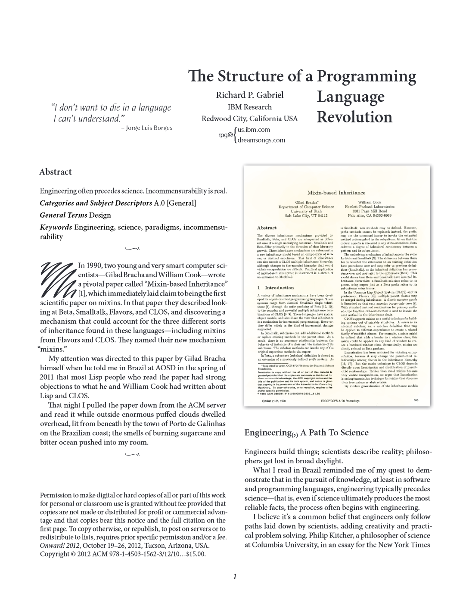

Programming systems
deserve a theory too!
Tomas Petricek, Charles University, Prague
tomas@tomasp.net |
https://tomasp.net | @tomaspetricek
with Joel Jakubovic and Jonathan Edwards
Programming language revolution
From systems to languages
- Mixins, CLOS and Flavors
- Reality of a running system
- Relationships prescribed in code
Scientific paradigm shifts
- The past is a foreign country
- Paradigms are incommensurable
- Old notions stop making any sense

Programming Languages
Programming is
writing code
Formal semantics, implementation, paradigms
We know how
to study this!

Programming systems
Interacting with a stateful system
Feedback, interactive display, live update
But how do we
study this?
DEMO
Commodore 64 BASIC
Why look at Commodore 64?

Technical aspects
- Integrated REPL and editor
- Structure editing via line numbers
- Simple with POKE for hackers
Social aspects
- Easy to get started with
- Program sharing in magazines
- Computer boots into programming system!

How to look at Commodore 64?
Complementary science approach by Hasok Chang
Doing history to contribute to contemporary science
Recover ideas lost for scientific or social reasons

Programming for
non-programmers
Data exploration using Excel, JS and Python
Data is an integrated
part of the program
Programs are run once
We don't need no abstraction!
DEMO
Data exploration in The Gamma
The Gamma
What makes it interesting?
- Everything is a member access
- Two-level conceptual structure
- All libraries are external
- Abstractions from concrete examples
Studying programming systems

Technical dimensions
- Analyze interesting past systems
- Capture key characteristics
- Understand range of options
Example dimensions
- Self-sustainability
- Feedback loops & modes of interaction
- Factoring of complexity & level of automation
DEMO
Programs as sequences of interactions
Conclusions
Programming systems deserve theory too!
- Take history seriously and learn from it
- Not everything needs proof or evaluation
- Disagree with our Technical Dimensions!
Tomas Petricek, Charles University, Prague
tomas@tomasp.net |
https://tomasp.net | @tomaspetricek
with Joel Jakubovic and Jonathan Edwards
References & demos
- J. Jakubovic, J. Edwards, T. Petricek (2022). Technical dimensions of programming systems. To appear
- T. Petricek, J. Jakubovic (2021). Complementary science of interactive programming systems. HaPoC
- T. Petricek (2022) The Gamma Programmatic Data Exploration for Non-programmers. VL/HCC
- J. Jakubovic, T. Petricek (2022) Ascending the Ladder to Self-Sustainability Onward!
- J. Edwards, S. Kell, T. Petricek, L. Church (2019). Evaluating programming systems design. PPIG